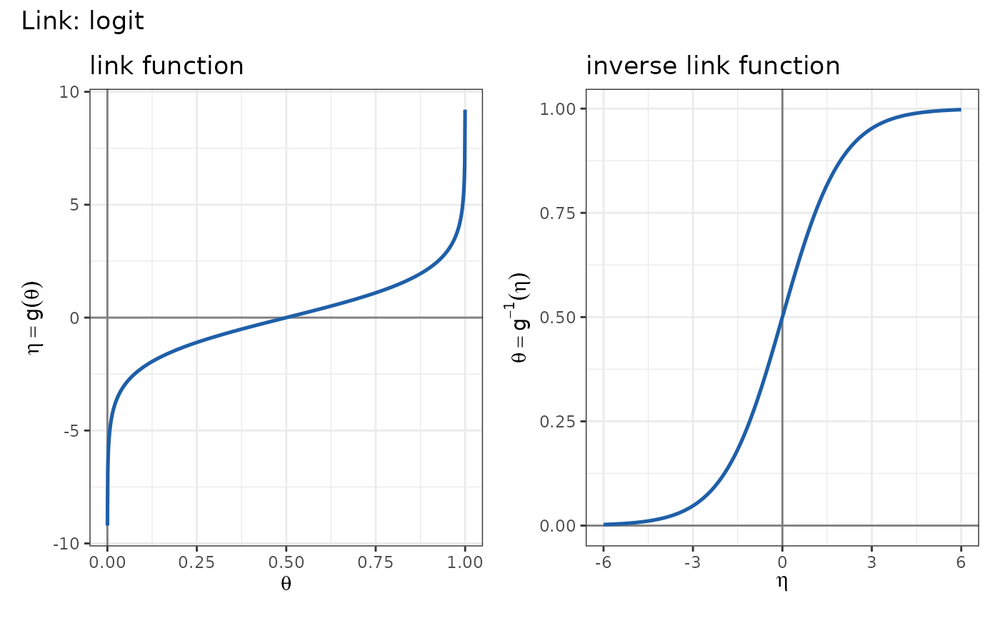
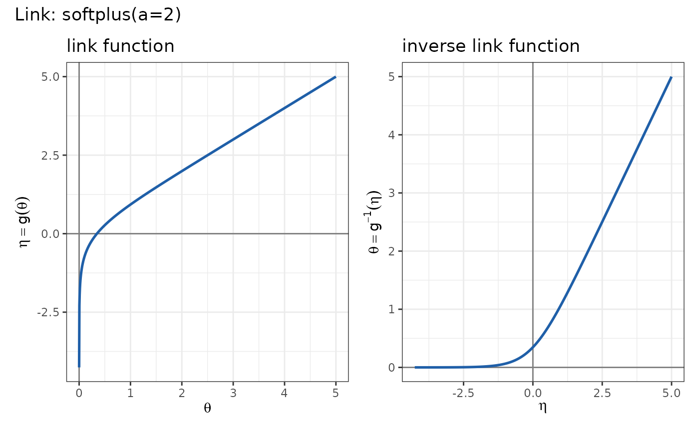

autoplot() returns a graph of a link object in two panels, and plot()
prints that graph:
the link function \(\eta = g(\theta)\) over its valid domain;
the inverse link function \(\theta = g^{-1}(\eta)\) over a standard range of linear predictors.
Dotted grey lines mark zero on both axes of each panel.
Usage
# S3 method for class 'link'
plot(x, ...)
autoplot.link(object, ...)Value
autoplot() returns a patchwork object holding the two ggplot2
panels; plot() prints the same object and returns it invisibly.
Details
The plotting ranges depend on whether the link bounds are finite. A
bounded domain is drawn up to a distance of 1e-4 from each finite bound,
and an unbounded side extends five units past the other bound (or from
\(-5\) to \(5\) when neither bound is finite). The inverse is drawn
over the values of \(\eta\) reached in the first panel, restricted to
\([-6, 6]\) when the two ranges overlap.
The graph is drawn with ggplot2 and its two panels are joined with
patchwork; both packages are suggested, and the methods signal an
error that names them when they are not installed. The returned object
can be modified like any other, for instance with
+ patchwork::plot_annotation(title = "my title").
Examples
plot(logit_link())

plot(softplus_link(2))
